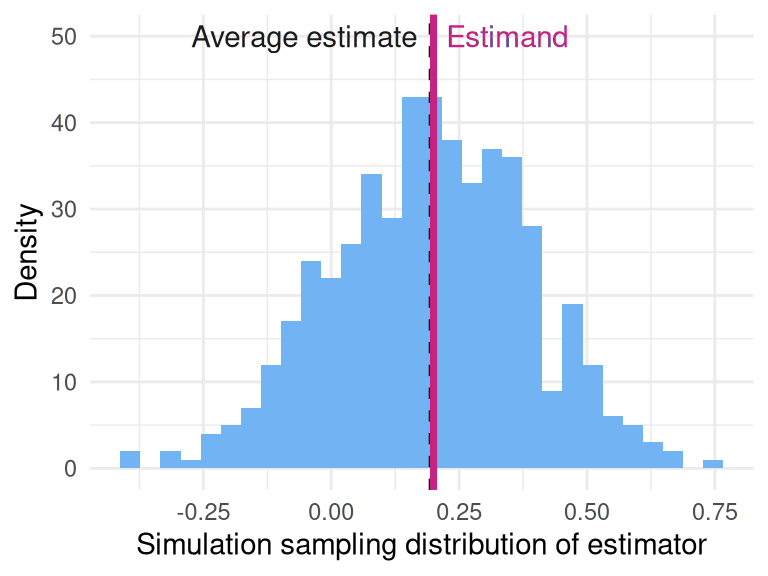
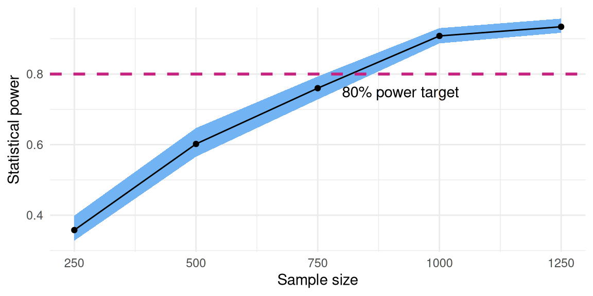

library(DeclareDesign)
sample_size <- 100
two_arm_trial <-
declare_model(N = sample_size,
U = rnorm(N),
potential_outcomes(Y ~ 0.2 * Z + U)) +
declare_inquiry(ATE = mean(Y_Z_1 - Y_Z_0)) +
declare_assignment(Z = complete_ra(N, prob = 0.5)) +
declare_measurement(Y = reveal_outcomes(Y ~ Z)) +
declare_estimator(Y ~ Z, inquiry = "ATE")Declare and diagnose your research design
DeclareDesign is a set of software tools to plan, implement, analyze, and communicate about empirical research

draw_data(two_arm_trial)| ID | U | Y_Z_0 | Y_Z_1 | Z | Y |
|---|---|---|---|---|---|
| 001 | -0.72 | -0.72 | -0.52 | 0 | -0.72 |
| 002 | -0.12 | -0.12 | 0.08 | 0 | -0.12 |
| 003 | 0.31 | 0.31 | 0.51 | 1 | 0.51 |
run_design(two_arm_trial)| estimate | std.error | p.value | inquiry | estimand |
|---|---|---|---|---|
| 0.48 | 0.19 | 0.01 | ATE | 0.2 |
diagnosis <- diagnose_design(two_arm_trial)
tidy(diagnosis)| diagnosand | estimate | std.error |
|---|---|---|
| mean_estimand | 0.200 | 0.000 |
| mean_estimate | 0.183 | 0.009 |
| bias | -0.017 | 0.009 |
| sd_estimate | 0.199 | 0.006 |
| rmse | 0.200 | 0.006 |
| power | 0.132 | 0.016 |
| coverage | 0.950 | 0.008 |
library(ggplot2)
ggplot(data = get_simulations(diagnosis),
aes(x = estimate)) +
geom_histogram() 
diagnosis <-
two_arm_trial |>
redesign(sample_size = c(250, 500, 750, 1000, 1250)) |>
diagnose_designs() |>
tidy() |>
filter(diagnosand == "power")
library(ggplot2)
ggplot(diagnosis, aes(sample_size, estimate)) +
geom_point() +
geom_line()